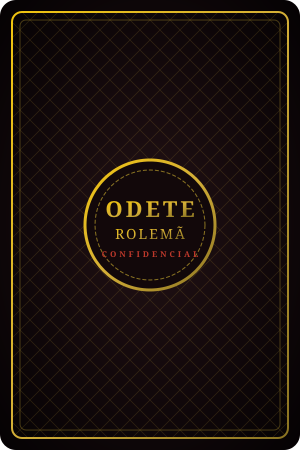
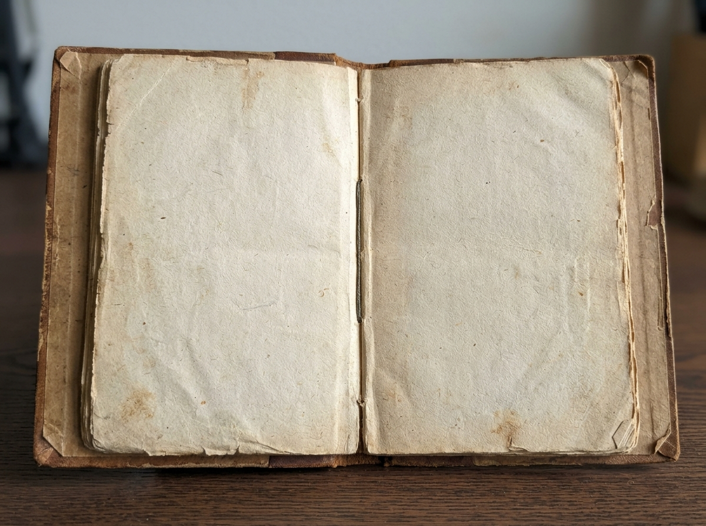

CARTA REFUTADA DO SEU PALPITE
Um investigador revelou uma carta!
A magnata Odete Rolemã foi misteriosamente assassinada. Escolha seu suspeito e desvende o crime.
Selando o assassino, a arma e o local no Envelope Secreto...

SUSPEITOMistério selado! Encontre as pistas.

Na calada da noite, a poderosa e implacável magnata Odete Rolemã foi encontrada morta! O laudo pericial atesta: homicídio premeditado, e seu testamento milionário desapareceu. Todos os 8 suspeitos do seu círculo próximo tinham fortes motivos para desejar o seu fim. Quem foi o autor do crime, qual arma utilizou e em qual local cometeu o assassinato?
ATENÇÃO: Se errar qualquer um dos três itens, você será eliminado da investigação!
realizou um palpite e você possui cartas que podem refutá-lo.
Selecione 1 carta para mostrar secretamente:
Sorteando aleatoriamente entre os investigadores da mesa...